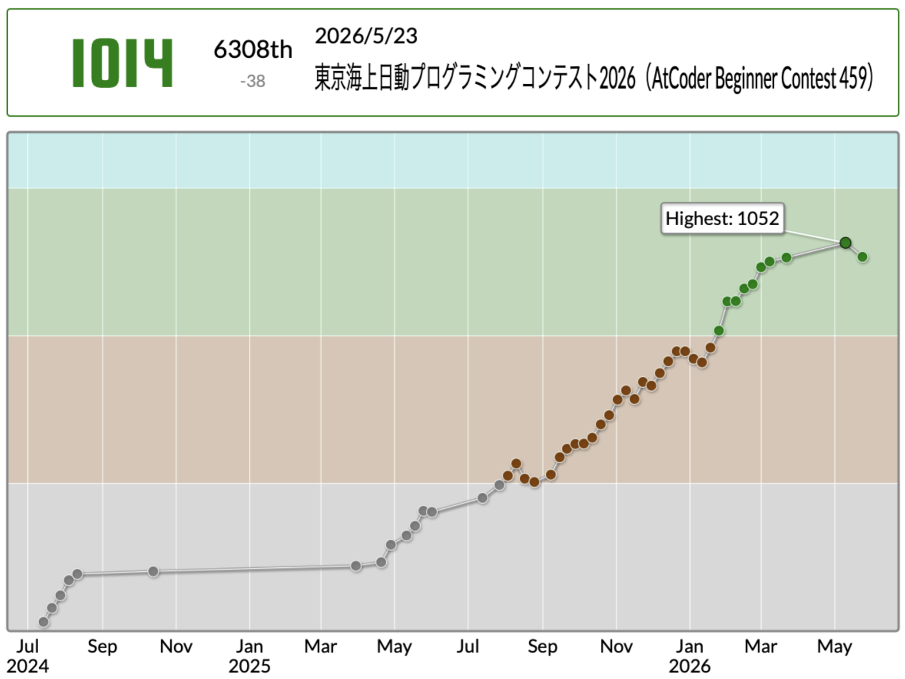

競技プログラミングを紹介します

競技プログラミングとは、出題される数学っぽい問題に対して "C++"や"Python"などのプログラミング言語で回答する競技である。
プログラムに入力が与えられるので、要求された出力を返すようにmain関数にコードを書けば良いのだが、 要求される出力を制限時間内、制限メモリ内で出力できるようにコーディングする必要があるため、 難しい問題はとことん難しいという特徴がある。 しかし、簡単な問題も多く存在し初心者でも楽しめるプログラミングとなっている。
随時、代表的なアルゴリズムやデータ構造について記事を書けたらいいなと思っています。 競技プログラミングに興味ある方や数学が得意な方はぜひ AtCoderの過去問の A問題やB問題を解いてみてください。